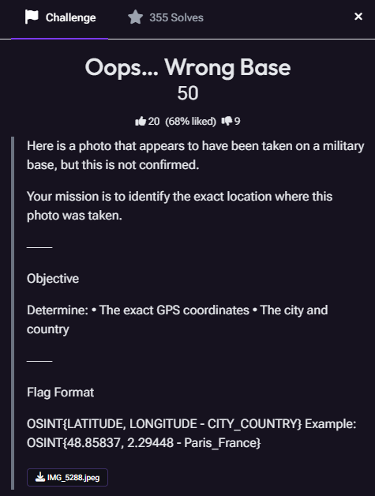
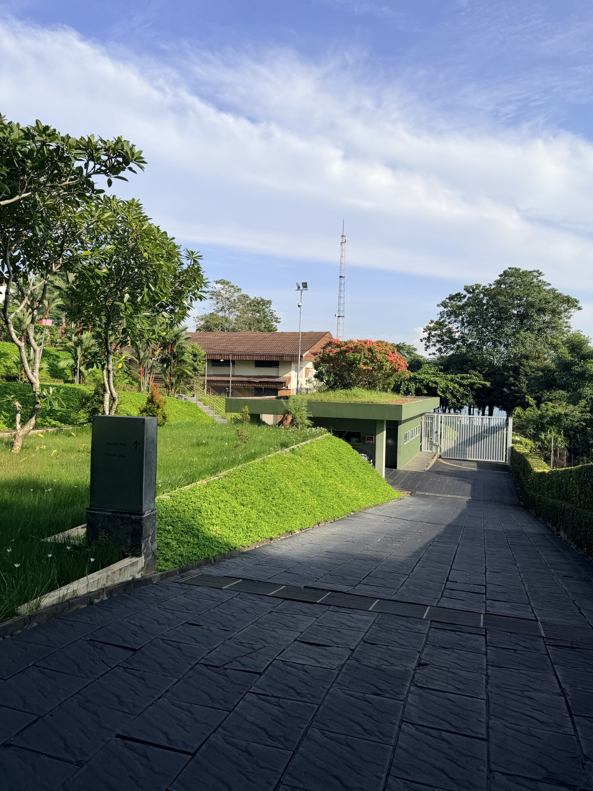
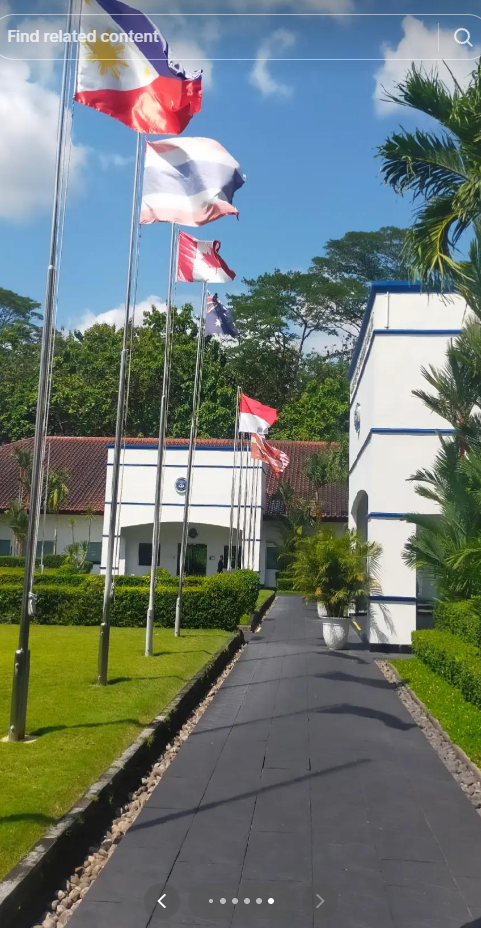
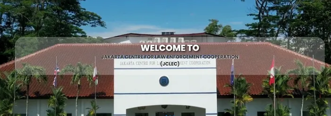
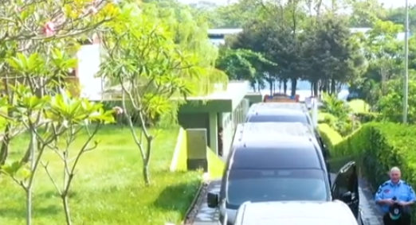
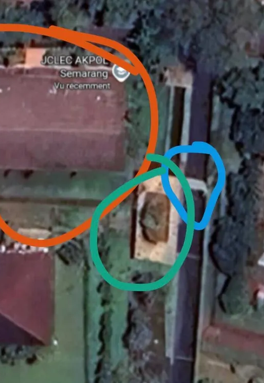
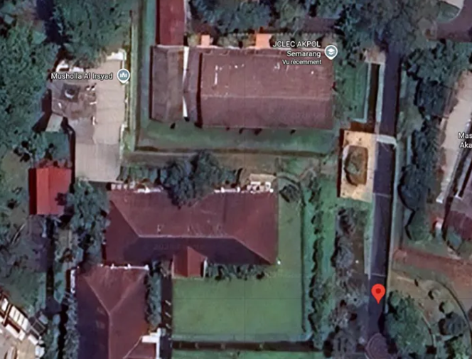

From Visual Clues to Confirmation: Geolocating a Security Facility
OSINT CTF Walkthrough | Geolocation & Visual Verification
Challenge Overview
This challenge provided a single photograph of a location that appeared to be part of a military or security facility. The objective was to determine the exact GPS coordinates of where the photograph was taken, along with the correct city and country.
Solving the challenge required identifying visual clues in the original image, searching for related imagery across public sources, and comparing permanent physical features of the site across ground-level and satellite imagery.


Step 1: Examining the Original Image
I began by examining the original photograph for environmental and structural features that could help narrow the location. Several details stood out, including tropical vegetation, a black paved driveway, a gated entrance, a green structure beside the road, red-roofed buildings, and a communications tower in the background.
None of these features independently identified the location, but together they provided useful visual references that could later be compared against imagery from other sources.
What is geolocation?
Geolocation is the process of determining where an image, video, or other piece of information originated by examining visual clues, geographic information, maps, satellite imagery, and other publicly available sources.
Step 2: Reverse Image Search and TikTok Pivot
I then used Google reverse image search with the original photograph. This search eventually led to a TikTok video showing a location with several similarities to the challenge image.
The black paved path, vegetation, architecture, and landscaping closely resembled the environment visible in the original photograph. The TikTok content became the major turning point in the investigation because it connected the visual environment to the Jakarta Centre for Law Enforcement Cooperation, commonly abbreviated as JCLEC, in Semarang, Indonesia.


Step 3: Corroborating the Location with YouTube
Identifying JCLEC established a strong candidate location, but I still needed to determine whether the exact area shown in the challenge photograph could be found within the facility.
I located a YouTube video showing vehicles arriving at the center. The video provided another ground-level perspective of the facility and showed the same entrance area from a different angle.
Of particular importance was the ramp and roadway near the entrance. These physical features closely matched the structures visible in the original challenge image and provided an independent source that further supported JCLEC as the correct location.

Step 4: Matching Physical Features
With the facility identified, I compared the original challenge photograph with publicly available map and satellite imagery. Instead of relying only on general similarities, I focused on permanent physical features that could be matched between the different perspectives.
The most useful features were the large red-roofed building, the smaller structure and ramp beside the roadway, the gated entrance, and the orientation of the road itself. Their relative positions matched the layout visible from above.


Step 5: Determining the Exact Coordinates
Once the ground-level imagery and satellite view were aligned, I focused on the specific roadway position where the original photograph would have been taken. The matching ramp, gate, building orientation, and surrounding structures allowed the location to be narrowed to the entrance area of JCLEC.
Comparing these features with the map location produced the final coordinates:
-7.01981, 110.40844
Investigation Results
Facility
Jakarta Centre for Law Enforcement Cooperation (JCLEC)
City and Country
Semarang, Indonesia
GPS Coordinates
-7.01981, 110.40844
Accepted Flag
OSINT{-7.01981, 110.40844 — Semarang_Indonesia}
Key Takeaway
This investigation demonstrated the value of combining multiple forms of open-source imagery during a geolocation investigation. No single clue in the original photograph immediately revealed the exact location.
Reverse image searching produced the initial lead, TikTok helped identify the facility, YouTube provided an independent ground-level perspective, and satellite imagery allowed the physical layout to be matched and the exact coordinates to be determined.
The challenge reinforced the importance of pivoting between platforms and verifying a possible location through multiple independent visual sources before reaching a final conclusion.